열·유동 CFD와 언리얼 통합 리허설
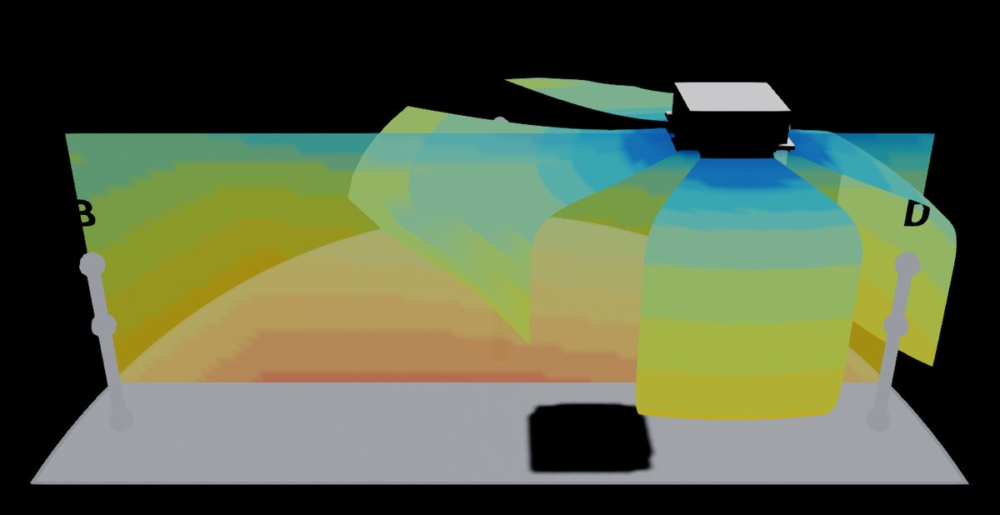
요약
본 문서는 스마트팜 공간의 온도·기류·전력을 언리얼 엔진에서 조작하고 확인하는 디지털 트윈 과제 가운데, 열·유동 해석 결과를 언리얼로 인계하고 조건 변경에 따른 예측 갱신 구조를 선구축한 범위를 정리한다. 실측 장비와 조명 배광 파일(IES)이 확보되기 전이므로, 모든 입력은 실데이터와 동일한 형식의 임시값으로 채워져 있다. 따라서 장비가 도착하면 코드와 화면을 바꾸지 않고 입력 파일만 교체하여 작업을 이어갈 수 있다.
문서는 전체 흐름에서의 수행 범위, 목데이터의 종류·형식·생성 방식·교체 조건, 실제 CFD 결과와 언리얼 시각화, 에어컨·재배단 위치 변경에 따른 예측 갱신, 검사·역산 리허설, 냉방·조명 전력량 계산, 장비 도착 이후의 작업 순서를 차례로 기술한다.
표기와 용어
표기 규칙
| 용어 | 뜻 |
|---|---|
| 목데이터 · 임시값 | 실측이나 정식 해석이 오기 전, 실데이터와 같은 파일 형식으로 채워 넣은 값. 파일의 source 항목에 MOCK 표기를 넣어 실데이터와 구분한다. |
| 가짜 실측 | 실측 센서값 대신 CFD 결과의 프로브 시계열을 실측 자리에 넣어 검사 기능을 시험한 데이터. |
| 수직취출 · vane25 | CFD 두 케이스. 수직취출은 1차 해석(취출 방향 아래), vane25는 실물 4방향 카세트 베인 25°를 반영한 재계산이다. |
| 커튼 | 4방향 취출구에서 나간 기류 궤적을 한 장의 면으로 이은 시각화 요소. 색은 그 지점의 온도다. |
| [SF 갱신] | 언리얼 툴바 버튼. 에어컨·재배단 위치와 조명 상태를 읽어 예측을 다시 만들고 시퀀스를 재생한다. |
| PINN · PINO | 물리방정식을 손실에 넣은 신경망(역산용)과 물리제약 신경연산자(실시간 예측용). |
1과제 개요와 수행 범위
스마트팜에서 냉방기 위치나 설정, 조명 출력을 바꾸었을 때 공간의 온도·기류·전력이 어떻게 달라지는지를 매번 실측하거나 매번 CFD를 수 시간씩 계산하여 확인하기는 어렵다. 본 과제는 소량의 실측으로 시뮬레이터를 교정하고, 교정된 시뮬레이터가 만든 대량의 결과를 AI 대리모델이 학습하게 하여, 언리얼에서 조건을 바꾸면 초 단위로 예측을 보여주는 구조를 목표로 한다.
1.1전체 흐름과 본 작업의 위치
과제는 여섯 역할(R1~R6)로 나뉘고, 데이터는 실측에서 시작해 언리얼 화면에서 끝난다. 아래 도식에서 굵은 청록 테두리 영역이 본 작업이 수행한 범위다. 본 작업은 R3 열·유동 해석 결과를 R6 언리얼로 인계하는 구간을 실데이터로 완성하였고, 아직 입력이 없는 R1·R2·R4·R5의 자리는 같은 형식의 임시값과 리허설로 채워 흐름 전체가 끊기지 않고 동작하게 하였다.
1.2역할별 진행 상태
| 역할 | 상태 | 본 작업에서 마련한 것 | 남은 입력 |
|---|---|---|---|
| R1 실측·계측 | 대기 | 센서 배치(A~D × 0.1·1.1·1.7 m)와 실측 CSV 형식을 확정하였다. 실측 대신 CFD 프로브를 가짜 실측으로 넣어 검사 경로를 시험하였다. | 온도·PPFD·전력 실측 CSV |
| R2 광환경 | 임시값 | 재배단 2단 조명을 언리얼 RectLight와 웹 3D 뷰에 배치하고, 배광은 반각 35° 면광원으로 근사하였다. | 조명 IES(LM-63)·스펙시트 |
| R3 열·유동 | 구현 | OpenFOAM 900초 과도해석 두 케이스를 언리얼 좌표로 반출하였다. 에어컨 위치를 옮기면 새 경계조건 파일을 생성한다. | 재배단 포함 격자 재계산 |
| R4 에너지 | 임시값 | 리턴 온도 기반 에너지수지로 냉방 전력을 근사하고, 웹 타일과 언리얼 3D 텍스트에 표시한다. | 전력 실측(COP 확정) |
| R5 AI | 리허설 | 대리모델 교재 규격, 학습·가중치 저장 구조, PINN 역산 리허설을 갖추었다. | 보정된 CFD 케이스 라이브러리 |
| R6 언리얼 | 구현 | UE 5.8 레벨, 4방향 취출 커튼, 온도 단면, 시퀀스 재생, [SF 갱신] 버튼, 웹 미리보기를 구현하였다. | — |
1.3오프라인 계산과 실시간 응답의 경계
수 시간이 걸리는 CFD 계산, 케이스 대량 생산, 대리모델 학습, 미지 물성값 역산은 사용자가 화면을 열기 전에 끝나 있어야 하는 오프라인 작업이다. 언리얼에서 조건을 바꾸는 순간에는 학습된 예측기에 조건을 넣어 결과를 그리는 일만 수행한다. 현재 이 실시간 자리에는 수 초 안에 답하는 임시 수식 예측기가 들어가 있으며, 학습 범위 밖의 조건은 오프라인 재계산 대상으로 넘긴다.
2리허설 공간과 데이터 계약
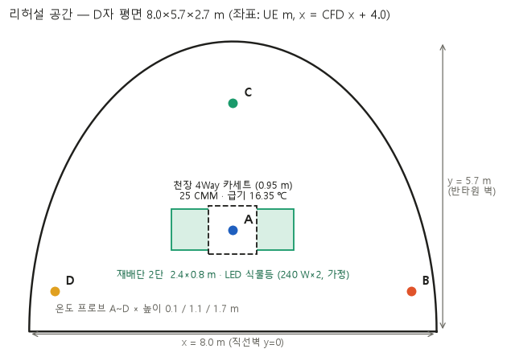
| 항목 | 값 |
|---|---|
| 공간 | D자(반타원) 8.0 × 5.7 × 2.7 m |
| 냉방기 | 4Way 천장 카세트 TUW090PA2SR, 정격 냉방 9.0 kW, 풍량 25 CMM |
| 급기 온도 | 16.35 ℃ (289.5 K), 초기 실온 28.85 ℃ 균일 |
| 재배단 | 2단 2.4 × 0.8 m, 단 높이 0.55·1.35 m, LED 2개 |
| 프로브 | A (4.0, 2.0) 에어컨 직하부 · B (7.5, 0.8) · C (4.0, 4.5) 반원 안쪽 · D (0.5, 0.8), 각 0.1·1.1·1.7 m |
| 해석 | OpenFOAM v2512 buoyantPimpleFoam, 900초 과도해석 |
| 시각표 | 0, 60, 130, 190, 260, 320, 390, 450, 510, 580, 640, 710, 770, 840, 900초 (15프레임) |
2.1데이터 계약
CFD, 임시 예측기, 대리모델, 실측은 모두 아래 규약을 따른다. 규약이 고정되어 있으므로 어떤 공급원의 데이터가 들어와도 언리얼과 웹은 수정 없이 같은 화면을 만든다. 이 규약을 바꾸면 하위 산출물이 모두 깨지므로 변경은 전 역할 합의 사항으로 둔다.
| 규약 | 내용 |
|---|---|
| 좌표 | 언리얼 기준 m, z 위. CFD 원점은 방 중앙이므로 UE x = CFD x + 4.0. 언리얼 반입 시 m → cm(×100). |
| 온도 | 프레임 원본은 K, 파생 파일(단면·커튼·프로브)은 ℃. |
| 시간 | 15프레임, 프레임 목록의 time_s가 기준. 프레임 사이는 화면에서 보간한다. |
| 출처 표기 | source 항목: simulated(CFD) · mock-vane25(임시 유동장) · MOCK-live …(라이브 예측). 화면 하단에 그대로 표시되어 실데이터와 섞이지 않는다. |
| 색 척도 | 온도 한 가지만 색으로 표현하고 척도는 전 프레임 고정한다. 속도는 화살표 길이·커튼 굵기로만 표현한다. |
3목데이터(임시값) 명세
현재 트윈은 실측과 장비 사양이 없는 상태에서 동작하므로, 입력의 상당 부분이 임시값이다. 이 장은 무엇이 임시값인지, 어떤 방식으로 만들어져 어떤 파일로 들어가는지, 무엇이 오면 어느 파일이 교체되는지를 정리한다.
3.1설계 원칙
- 형식은 실데이터와 동일하다. 임시값 파일의 열 이름·단위·좌표·시각표는 실제 CFD 반출물과 같다. 소비하는 쪽(언리얼·웹·학습기)은 공급원을 구분하지 않는다.
- 출처를 파일 안에 새긴다.
source항목에MOCK을 넣고 화면에 표시하여, 임시값이 결과로 오인되지 않게 한다. - 교체 단위는 한 곳이다. 임시값을 만드는 부분이 한곳에 모여 있어, 실데이터가 오면 그 부분 또는 입력 데이터만 바뀐다.
- 실데이터 보호. 임시 예측기가 실데이터 파생물을 덮기 전에 한 번 백업 폴더로 대피시킨다.
3.2임시값 목록과 교체 지점
| 임시값 | 현재 값 · 생성 방식 | 들어가는 파일 | 교체 조건 · 교체 후 |
|---|---|---|---|
| 온도·기류 예측 | 수식 유동장 모델(3.3절). 에어컨·재배단 위치와 조명 점등률을 받아 수 초 안에 15프레임 생성 | 단면, 커튼, 측정점, 프레임 목록, 전력 | 케이스 라이브러리 확보 → PINO 대리모델 추론으로 같은 파일 생성 |
| 조명 발열 | 480 W (240 W × 2단) 가정 | 온도장·전력 | 조명 스펙시트 소비전력 |
| 배광 | 반각 35° 사각 면광원 근사, 단당 9,000 lm | 화면 조명 | IES 파일을 RectLight의 IES Texture 슬롯에 장착 |
| 냉방 COP | 3.5 (효율 1등급 카세트 통상 범위 3.4~3.8) | 전력 결과 | 전력계·클램프미터 실측 |
| 실내기 팬 전력 | 90 W (강풍 대략값) | 전력 결과 | 전력 실측 |
| 방 열손실계수 | 641 W/K (CFD 냉각곡선에서 역산) | 평형온도 상승 | 실측 기반 PINN 재역산 |
| 재배단 기류 차단 | 반영 안 함. 조명 열원으로만 반영 | — | 재배단 포함 격자 재계산 |
| 실측 | CFD 두 케이스의 프로브 시계열(가짜 실측) | 측정점 시계열 형식 | R1 실측 CSV를 같은 형식으로 넣어 교체 |
| 역산기 | 격자 최소제곱 3파라미터, 물리손실 없음 | 검사 결과 | DeepXDE PINN(PINN 리허설)으로 대체 후보 |
| 대리모델 교재 | 수식 모델로 생성한 750쌍 (위치 50곳 × 15시각) | 대리모델 교재 | 보정된 CFD 케이스로 같은 규격 교재 작성 |
3.3임시 유동·온도 모델의 구성
임시 예측기는 물리 해석이 아니라, 실물 확인 패턴(냉기가 4방향으로 천장을 타고 퍼져 벽을 따라 내려오고, 방 가운데 아래쪽이 마지막에 식음)을 닫힌 수식으로 재현한 모델이다. 경계조건 수치는 vane25 CFD와 같게 두었다.
기류 성분 (합성)
| 성분 | 표현 |
|---|---|
| ① 천장 제트층 | 반경 방향 취출 4.108 m/s × cos 25°, 거리 감쇠 1/(1+r/0.8), 천장층 두께 0.32 m |
| ② 벽 하강 | D자 벽까지 거리 0.35 m 이내에서 −0.55 m/s |
| ③ 바닥 귀환 | 바닥층 0.45 m에서 에어컨 쪽으로 0.30 m/s |
| ④ 중앙 상승 | 리턴 흡입, 반경 0.7 m 안에서 0.35 m/s |
| ⑤ 조명 플룸 | 재배단 위 1.5 m 이상에서 0.25 m/s × 점등률 |
| 시간 램프 | 1 − exp(−t/τflow) |
온도 모델
| 항목 | 표현 |
|---|---|
| 초기·급기 | 28.85 ℃ 균일 · 16.35 ℃ |
| 900초 목표장 | 바닥 22.9 ℃ → 천장 23.8 ℃ 선형 성층 + 제트층 20.5 ℃ 한랭 |
| 도달 지연 | 천장층은 반경/0.15, 그 외는 벽 경유 경로 길이로 계산 |
| 시정수 | τ = 70 + 90 × (1 − z/2.7) 초, 아래쪽일수록 느림 |
| 조명 광열 | 전역 +P/UA, 재배단 1.6 m 부근 국소 +1.8 K × 점등률 |
| 보정 인자 | dT_end · s_tau · s_delay (역산기가 조정) |
식: T(t) = Tstart + (Tend − Tstart) × (1 − exp(−max(t − 지연, 0)/τ)).
3.4목데이터 생성 흐름
목데이터는 네 개의 생성기가 차례로 만든다. 모든 생성기는 같은 공간·시각 파라미터와 임시 유동장 모델의 두 함수, 곧 위치·시각·에어컨·조명·재배단 조건을 받아 온도(K)를 돌려주는 온도 함수와 기류 속도 벡터(m/s)를 돌려주는 기류 함수를 공유한다. 즉 모든 파일의 온도·기류 값은 3.3절의 같은 수식에서 나온다.
| 순서 | 생성기 | 읽는 것 | 만드는 것 |
|---|---|---|---|
| 1 | 언리얼 [SF 갱신] | 레벨의 에어컨·재배단 액터 위치, 조명 점등률 | 에어컨 위치 조건 · 재배단 위치 조건 · 조명 점등률 조건 |
| 2 | 임시 유동장 | 공간 파라미터 | 3차원 프레임 15개 · 프레임 목록 · 측정점 시계열 (에어컨 기본 위치) |
| 3 | 라이브 예측기 | 1의 위치·점등률 조건 | 수평 온도 단면 · 수직 온도 단면 · 취출 커튼 · 측정점 시계열 · 전력 결과 · 프레임 목록 |
| 4 | 대리모델 교재 | 무작위 에어컨 위치 50곳 (시드 42) | 대리모델 교재 · 교재 설명 데이터 |
| 5 | CFD 경계조건 | 에어컨 액터 위치·방향, 카세트 사양 | CFD 경계조건 데이터 (OpenFOAM 재계산 입력) |
| 6 | 검사·역산 | (가짜) 실측 측정점 시계열 | 검사 결과 |
아래 명세의 예시 레코드와 값 범위는 위 생성기를 실제로 실행한 출력에서 추출하였다. 조건은 임시 유동장 기본 위치(4.0, 2.0), 라이브 예측은 에어컨 (2.0, 1.5)·재배단 (2.5, 3.5)·조명 60 %, 프레임은 05번(320초)이다. 타입 표기는 JSON Schema 기본형(number·integer·string·boolean·array·object)을 따르며, CSV는 한 행을 JSON 객체로 옮겨 표기하였다.
3.5파일별 형식과 생성 방식
A. 입력 조건 — 에어컨 위치 · 재배단 위치 · 조명 점등률
언리얼 레벨의 액터 상태를 예측기에 넘기는 파일이다. 언리얼 좌표 cm를 100으로 나누어 m로 기록하고 소수 셋째 자리에서 반올림한다.
{
"에어컨 위치": {
"schema": {
"ac": {
"type": "array",
"items": "number",
"minItems": 2,
"unit": "m",
"산출": "언리얼 에어컨 액터 위치 (x/100, y/100)",
"제약": "예측기가 [0.7, 7.3] × [0.7, 5.0] 범위로 제한"
}
},
"example": {
"ac": [2.0, 1.5]
}
},
"재배단 위치": {
"schema": {
"rack": {
"type": "array",
"items": "number",
"minItems": 2,
"unit": "m",
"산출": "언리얼 재배단 액터 위치 — 조명 광열·플룸의 중심"
}
},
"example": {
"rack": [2.5, 3.5]
}
},
"조명 점등률": {
"schema": {
"pct": {
"type": "number",
"minimum": 0,
"maximum": 100,
"unit": "%",
"산출": "조명 점등률. 예측기 내부에서 light = pct/100"
}
},
"example": {
"pct": 60
}
},
"값이 없을 때": "기본값 ac=[4.0, 2.0], rack=[4.0, 2.0], pct=0"
}
B. 3차원 프레임 (CSV)
CFD 셀 중심 결과를 대신하는 방 전체 점군이다. 실CFD 반출물과 열 이름·순서·단위가 같다.
- 0.10 m 간격 규칙 격자의 셀 중심(0.05 m 오프셋)을 깔고, D자 경계 안쪽 점만 남긴다 (96,714점).
- 15개 시각마다 모든 점에서 온도 함수와 기류 함수를 계산한다.
- 압력은 모사하지 않으므로 100000.0 Pa 상수를 넣고,
source에mock-vane25를 기록한다.
{
"format": "CSV, header 1행, UTF-8",
"rows_per_file": 96714,
"files": 15,
"schema": {
"x": {
"type": "number",
"unit": "m",
"range": [0.05, 7.95],
"산출": "격자 셀 중심 (UE x)"
},
"y": {
"type": "number",
"unit": "m",
"range": [0.05, 5.65],
"산출": "격자 셀 중심 (0 = 평벽)"
},
"z": {
"type": "number",
"unit": "m",
"range": [0.05, 2.65],
"산출": "격자 셀 중심 (0 = 바닥)"
},
"T": {
"type": "number",
"unit": "K",
"range": [292.75, 297.743],
"산출": "온도 함수 T(점, 시각)"
},
"Ux": {
"type": "number",
"unit": "m/s",
"range": [-2.8771, 2.8771],
"산출": "기류 함수 U(점, 시각)의 x 성분"
},
"Uy": {
"type": "number",
"unit": "m/s",
"range": [-2.8771, 2.8771],
"산출": "기류 함수의 y 성분"
},
"Uz": {
"type": "number",
"unit": "m/s",
"range": [-1.4669, 0.3399],
"산출": "기류 함수의 z 성분"
},
"p": {
"type": "number",
"unit": "Pa",
"range": [100000.0, 100000.0],
"산출": "상수 — 목데이터는 압력을 계산하지 않음"
},
"source": {
"type": "string",
"enum": ["mock-vane25", "mock", "simulated"],
"산출": "공급원 표기"
}
},
"example_rows": [
{
"x": 0.35,
"y": 0.15,
"z": 1.95,
"T": 296.937,
"Ux": -0.0022,
"Uy": -0.0011,
"Uz": -0.3305,
"p": 100000.0,
"source": "mock-vane25"
},
{
"x": 3.45,
"y": 3.15,
"z": 1.35,
"T": 297.086,
"Ux": 0.0,
"Uy": -0.0,
"Uz": 0.0063,
"p": 100000.0,
"source": "mock-vane25"
}
]
}
실CFD(수직취출) 반출물은 같은 열에 89,600점, p는 솔버 압력(약 100030 Pa), source는 simulated가 들어간다.
C. 프레임 목록 (JSON)
프레임 번호와 실제 경과 시각을 잇고, 화면 하단 ‘데이터 출처’ 문자열이 여기서 나온다. 임시 유동장과 라이브 예측기가 같은 구조로 쓰며, 라이브 예측기는 3차원 프레임을 만들지 않으므로 points가 0, file이 빈 문자열이다.
{
"schema": {
"source": {
"type": "string",
"산출": "MOCK-vane25 … / MOCK-live (수식 예측, AC=x,y, 조명 n%) / simulated"
},
"solver": {
"type": "string",
"산출": "생성 모듈 이름"
},
"room_m": {
"type": "object",
"properties": {
"Lx": "number",
"Ly": "number",
"Lz": "number",
"shape": "string?"
}
},
"ac": {
"type": "object",
"properties": {
"type": "string?",
"centre_ue_m": "array<number>[3]"
}
},
"frames": {
"type": "array",
"items": {
"frame": "integer",
"time_s": "number",
"points": "integer",
"file": "string"
}
}
},
"example_vane_mock": {
"source": "MOCK-vane25 (임시값 — 진짜 계산 완료 시 교체)",
"solver": "field model (임시 유동장 모델)",
"room_m": {
"Lx": 8.0,
"Ly": 5.7,
"Lz": 2.7,
"shape": "D (semi-ellipse)"
},
"ac": {
"type": "4Way ceiling cassette (vane 25deg side discharge)",
"centre_ue_m": [4.0, 2.0, 2.7]
},
"frames": [
{
"frame": 0,
"time_s": 0.0,
"points": 96714,
"file": "frame_00.csv"
},
{
"frame": 1,
"time_s": 60.0,
"points": 96714,
"file": "frame_01.csv"
},
"…"
]
},
"example_live": {
"source": "MOCK-live (수식 예측, AC=2.00,1.50, 조명 60% — 대리모델로 교체 예정)",
"solver": "field model (라이브 예측기)",
"room_m": {
"Lx": 8.0,
"Ly": 5.7,
"Lz": 2.7
},
"ac": {
"centre_ue_m": [2.0, 1.5, 2.7]
},
"frames": [
{
"frame": 0,
"time_s": 0.0,
"points": 0,
"file": ""
},
{
"frame": 1,
"time_s": 60.0,
"points": 0,
"file": ""
},
"…"
]
}
}
D. 수평 온도 단면 (CSV)
높이 1.1 m 평면의 온도 격자다. 웹 대시보드의 위에서 본 온도와 언리얼 온도 카펫이 읽는다.
- x를 0~8.0 m에서 101칸, y를 0~5.7 m에서 72칸으로 균등 분할한다 (간격 약 0.08 m).
- D자 경계 밖 격자는 행을 쓰지 않는다 (101 × 72 = 7,272칸 중 5,618칸).
- 각 칸에서 온도 함수로 높이 1.1 m의 온도를 구해 273.15를 빼 ℃로 바꾸고, 좌표는 언리얼 단위에 맞춰 cm로 쓴다.
{
"format": "CSV",
"rows_per_file": 5618,
"files": 15,
"schema": {
"ix": {
"type": "integer",
"range": [0.0, 100.0],
"산출": "x 격자 번호 0~100"
},
"iy": {
"type": "integer",
"range": [0.0, 71.0],
"산출": "y 격자 번호 0~71"
},
"x": {
"type": "number",
"unit": "cm",
"range": [0.0, 800.0],
"산출": "ix × 8.0 m / 100 × 100"
},
"y": {
"type": "number",
"unit": "cm",
"range": [0.0, 570.0],
"산출": "iy × 5.7 m / 71 × 100"
},
"T": {
"type": "number",
"unit": "℃",
"range": [24.271, 24.703],
"산출": "온도 함수 − 273.15, 소수 3자리"
}
},
"example_rows": [
{
"ix": 0,
"iy": 0,
"x": 0.0,
"y": 0.0,
"T": 24.271
},
{
"ix": 51,
"iy": 55,
"x": 408.0,
"y": 441.5,
"T": 24.396
}
]
}
E. 수직 온도 단면 (CSV)
에어컨 중심을 지나는 수직면의 온도 격자다. 에어컨이 옮겨지면 단면의 y 위치도 함께 옮겨진다.
- x를 0~8.0 m에서 101칸, z를 0.05~2.65 m에서 34칸으로 나눈다.
- 평면 y = 에어컨 y 위에서 D자 경계 안의 칸만 쓴다.
- 온도는 D와 같은 방식, 좌표는 cm.
{
"format": "CSV",
"rows_per_file": 3298,
"files": 15,
"schema": {
"ix": {
"type": "integer",
"range": [2.0, 98.0],
"산출": "x 격자 번호"
},
"iz": {
"type": "integer",
"range": [0.0, 33.0],
"산출": "z 격자 번호 0~33"
},
"x": {
"type": "number",
"unit": "cm",
"range": [16.0, 784.0],
"산출": "x 좌표"
},
"z": {
"type": "number",
"unit": "cm",
"range": [5.0, 265.0],
"산출": "높이"
},
"T": {
"type": "number",
"unit": "℃",
"range": [19.903, 24.891],
"산출": "온도 함수 T(x, 에어컨 y, z, t) − 273.15"
}
},
"example_rows": [
{
"ix": 16,
"iz": 24,
"x": 128.0,
"z": 194.1,
"T": 24.233
}
]
}
F. 취출 커튼 (CSV)
4방향 취출구에서 나간 기류 궤적이다. 언리얼이 같은 방향·같은 궤적 번호의 점을 이어 면(커튼)을 만들고, 점마다 온도색을 칠한다.
- 방향(Xp·Xm·Yp·Ym)마다 취출 슬롯 길이 0.60 m를 따라 시드 9개를 놓는다. 슬롯은 에어컨 중심에서 ±0.457 m, 높이 2.60 m다.
- 각 시드를 기류 함수 장에서 2차 룽게–쿠타(중간점)로 적분한다. 시간 간격 0.07초, 170스텝이다.
- 방 밖으로 나가거나 속도가 0.015 m/s 미만이 되면 그 궤적은 마지막 위치에 멈춘다.
- 7스텝 이동평균을 두 번 적용해 궤적을 부드럽게 만든 뒤, 각 점의 온도 함수를 ℃로 기록한다.
{
"format": "CSV",
"rows_per_file": 6120,
"files": 15,
"구조": "4 방향 × 9 궤적(k) × 170 스텝 = 6,120 행",
"schema": {
"dir": {
"type": "string",
"enum": ["Xm", "Xp", "Ym", "Yp"],
"산출": "취출 방향 (X+, X−, Y+, Y−)"
},
"k": {
"type": "integer",
"range": [0.0, 8.0],
"산출": "슬롯 위 시드 번호"
},
"step": {
"type": "integer",
"range": [0.0, 169.0],
"산출": "적분 스텝 (0.07 s 간격)"
},
"x": {
"type": "number",
"unit": "m",
"range": [0.3029, 5.3693],
"산출": "궤적 위치"
},
"y": {
"type": "number",
"unit": "m",
"range": [0.1279, 5.2357],
"산출": "궤적 위치"
},
"z": {
"type": "number",
"unit": "m",
"range": [0.4434, 2.6],
"산출": "궤적 위치"
},
"T": {
"type": "number",
"unit": "℃",
"range": [20.821, 24.571],
"산출": "온도 함수 T(궤적점, max(t, 5 s)) − 273.15"
}
},
"example_rows": [
{
"dir": "Xp",
"k": 0,
"step": 0,
"x": 2.457,
"y": 1.2,
"z": 2.6,
"T": 20.999
},
{
"dir": "Xp",
"k": 4,
"step": 9,
"x": 3.1804,
"y": 1.5,
"z": 2.4302,
"T": 23.32
}
]
}
실데이터(vane25) 커튼은 CFD 속도장을 격자 보간해 같은 형식으로 만들며, 4.2절의 언리얼 캡처가 그 결과다.
G. 측정점 시계열 (CSV)
실측 센서가 놓일 네 지점 × 세 높이의 시계열이다. 실측 CSV가 도착하면 같은 형식으로 이 데이터를 대체하며, 검사기·PINN·전력 근사·그래프가 모두 이 형식을 읽는다.
- 지점 A(4.0, 2.0) · B(7.5, 0.8) · C(4.0, 4.5) · D(0.5, 0.8), 높이 0.1 · 1.1 · 1.7 m의 12점을 고정한다. 에어컨을 옮겨도 센서 위치는 바뀌지 않는다.
- 0~900초를 1.15초 간격으로 나눈 783개 시각마다 12점의 온도와 속력을 계산한다.
- 행 순서는 시각 → 지점 → 높이다.
{
"format": "CSV",
"rows": 9396,
"times": 783,
"dt_s": 1.15,
"schema": {
"t_s": {
"type": "number",
"unit": "s",
"range": [0.0, 899.3],
"산출": "0~900초, 1.15초 간격"
},
"point": {
"type": "string",
"enum": ["A", "B", "C", "D"],
"산출": "센서 지점"
},
"ue_x": {
"type": "number",
"unit": "m",
"range": [0.5, 7.5],
"산출": "지점 고정 좌표"
},
"ue_y": {
"type": "number",
"unit": "m",
"range": [0.8, 4.5],
"산출": "지점 고정 좌표"
},
"z": {
"type": "number",
"unit": "m",
"enum": [0.1, 1.1, 1.7],
"산출": "센서 높이"
},
"T_C": {
"type": "number",
"unit": "℃",
"range": [23.413, 28.85],
"산출": "온도 함수 − 273.15, 소수 3자리"
},
"U_mag": {
"type": "number",
"unit": "m/s",
"range": [0.0, 0.2859],
"산출": "기류 함수 크기, 소수 4자리 (실측에는 없어도 됨)"
}
},
"example_rows": [
{
"t_s": 287.5,
"point": "A",
"ue_x": 4.0,
"ue_y": 2.0,
"z": 0.1,
"T_C": 25.233,
"U_mag": 0.2853
},
{
"t_s": 287.5,
"point": "A",
"ue_x": 4.0,
"ue_y": 2.0,
"z": 1.1,
"T_C": 24.653,
"U_mag": 0.0008
}
]
}
실CFD 프로브는 솔버 출력 간격(0.53~0.64초)을 그대로 쓰므로 행 수만 다르다. 실측 CSV는 t_s,point,ue_x,ue_y,z,T_C 여섯 열이면 검사기가 읽는다.
H. 예상 소비전력 (JSON)
웹 대시보드의 소비전력 타일과 언리얼 재생 중 3D 텍스트가 읽는 파일이다. 모든 값이 임시값 COP·조명 와트에 의존한다.
- 측정점 시계열에서 A 지점 1.7 m 온도를 리턴 공기온도로 읽는다.
- 열제거율 Q = (25 CMM ÷ 60) × 1.17 kg/m³ × 1006 J/kg·K × (Treturn − 16.35 ℃)로 계산하고, 음수는 0으로 둔다.
- 냉방 소비전력 P = Q ÷ COP 3.5 + 팬 90 W를 구해, 프레임 시각 15개에 가장 가까운 값을 뽑는다.
- 조명 전력 = pct/100 × 480 W, 15분 적산 = ∫P dt(사다리꼴) + 조명 전력 × 0.25 h.
{
"format": "JSON",
"schema": {
"t": {
"type": "array",
"items": "number",
"unit": "s",
"length": 15,
"산출": "프레임 시각"
},
"cool_W": {
"type": "array",
"items": "number",
"unit": "W",
"length": 15,
"산출": "Q/COP + 팬 (팬 포함)"
},
"light_W": {
"type": "number",
"unit": "W",
"산출": "pct/100 × 조명 전력 480 W"
},
"fan_W": {
"type": "number",
"unit": "W",
"산출": "팬 전력 상수 90 W"
},
"kwh_15min": {
"type": "number",
"unit": "kWh",
"산출": "냉방 적분 + 조명"
},
"note": {
"type": "string",
"산출": "임시값 근거 문구 (화면 표시)"
}
},
"example": {
"t": [
0.0,
60.0,
130.0,
190.0,
260.0,
320.0,
390.0,
450.0,
510.0,
580.0,
640.0,
710.0,
770.0,
840.0,
900.0
],
"cool_W": [
1841.5,
1802.1,
1480.8,
1335.5,
1244.2,
1202.8,
1176.9,
1165.2,
1158.6,
1154.4,
1152.5,
1151.4,
1150.9,
1150.4,
1150.3
],
"light_W": 288.0,
"fan_W": 90.0,
"note": "임시값: COP 3.5(1등급 추정)·조명 480W 가정 — 실측으로 교체",
"kwh_15min": 0.389
}
}
I. 대리모델 교재 (NumPy 배열 + 설명 JSON)
「조건 → 온도장」 쌍을 NumPy 압축 배열로 묶은 학습 교재다. 진짜 CFD 케이스가 쌓이면 같은 배열 이름·모양으로 교체한다.
- 난수 시드 42로 방 가장자리 0.8 m를 제외한 D자 내부에서 에어컨 위치 50곳을 뽑는다.
- 위치마다 15개 시각에서 1.1 m 수평장(72 × 101)과 에어컨 통과 수직장(34 × 101)을 계산한다. 조명·재배단은 넣지 않는다.
- 수평장의 방 밖 칸은 NaN으로 채우고, 방 안 여부를
mask로 함께 저장한다 (750쌍, 12.2 MB).
{
"format": "NPZ (NumPy 압축 배열)",
"arrays": {
"X": {
"type": "array<float32>",
"shape": [750, 3],
"산출": "[ac_x (m), ac_y (m), t (s)]"
},
"Y": {
"type": "array<float32>",
"shape": [750, 72, 101],
"unit": "℃",
"산출": "1.1 m 수평 온도장, 방 밖 NaN (샘플당 NaN 1,654칸)"
},
"Yv": {
"type": "array<float32>",
"shape": [750, 34, 101],
"unit": "℃",
"산출": "y = ac_y 수직 온도장 (마스크 없음)"
},
"mask": {
"type": "array<bool>",
"shape": [72, 101],
"산출": "D자 내부 True (5,618칸)"
}
},
"example_X": [
[5.753, 2.599, 0.0],
[5.753, 2.599, 60.0],
[6.295, 3.659, 130.0]
],
"example_Y[17]": {
"min": 26.086,
"max": 27.447,
"row36_col40_43": [27.151, 27.135, 27.119, 27.103]
},
"교재 설명": {
"source": "MOCK (임시 유동장 모델) — PINO 파이프라인 리허설용. 진짜 CFD 케이스가 쌓이면 같은 규격으로 교체",
"X": "조건 [ac_x(m), ac_y(m), t(s)] — 이후 확장: 베인각, 풍량, 조명%",
"Y": "1.1m 수평 온도장 ℃, (NY=72, NX=101), 방 밖 NaN",
"Yv": "AC 통과 수직 온도장 ℃, (NZ=34, NX=101)",
"grid": {
"x_m": [0.0, 8.0],
"y_m": [0.0, 5.7],
"z_m": [0.05, 2.6500000000000004],
"z_h": 1.1
},
"n_samples": 750,
"n_positions": 50,
"rng_seed": 42
}
}
J. CFD 경계조건 (JSON)
언리얼에서 옮긴 에어컨 위치로 OpenFOAM 경계조건을 다시 만드는 입력이다. 목데이터가 아니라 CFD 경로(5장)의 시작점이며, 사양값 일부가 가정값이다.
- 언리얼 에어컨 액터의 위치·방향을 읽어 CFD 좌표로 옮긴다 (CFD x = UE x − 4.0).
- 카세트 형상(판넬 950 mm, 슬롯 폭 0.06 m)에 맞춰 취출 슬롯 4개와 리턴 박스를 OpenFOAM 영역 정의용 박스로 계산한다.
- 풍량을 슬롯 4개에 나누고 급기 온도·전력 사양을 함께 기록한다.
{
"format": "JSON",
"schema": {
"ue_location_m": "array<number>[3]",
"ue_yaw_deg": "number",
"cfd_centre_m": "array<number>[3]",
"topoSet_boxes": "object<string, {min: array<number>[3], max: array<number>[3]}>",
"supply": "object",
"power": "object",
"spec": "object"
},
"example": {
"ue_location_m": [4.0, 2.0, 2.7],
"ue_yaw_deg": 0.0,
"cfd_centre_m": [0.0, 2.0, 2.7],
"topoSet_boxes": {
"inletXp": {
"min": [0.397, 1.675, 2.699],
"max": [0.457, 2.325, 2.701]
},
"return": {
"min": [-0.285, 1.715, 2.699],
"max": [0.285, 2.285, 2.701]
},
"…": "inletXm · inletYm · inletYp"
},
"supply": {
"total_CMM": 25,
"total_m3s": 0.416667,
"per_slot_m3s": 0.104167,
"온도 함수_K": 289.5,
"direction": "patch normal (수직 아래) — ⚠ 실물 베인은 바깥으로 뿜음. 베인 각도 실측 후 (cos, 0, -sin) 으로 교체 필요"
},
"power": {
"cooling_W": 9000,
"consumption_W": 2000,
"COP": 4.5,
"curve_W": {
"rated": 2000,
"mid": 1450.0,
"min": 700.0
}
}
}
}
급기 방향 항목의 수직 아래 표기는 1차 해석 당시 값이며, vane25 케이스에서는 베인 25° 방향으로 경계조건을 만들었다.
K. 검사 결과 (JSON)
(가짜) 실측 프로브를 임시 모델과 비교해 판정하고, 세 보정 인자를 역산한 결과다. 라벨(케이스)별로 누적 기록된다.
- 실측 CSV를 읽어 시각 × 센서 12점 행렬을 만든다.
- 임시 모델 온도 함수의 보정 인자 dT_end · s_tau · s_delay를 격자 탐색해 RMS가 최소인 조합을 고른다.
- 보정 후 RMS로 적합(≤0.5 ℃) · 주의(≤1.0 ℃) · 불일치를 판정한다.
{
"format": "JSON (label → result)",
"schema": {
"measured": "string",
"ac": "array<number>[2]",
"light": "number",
"rms_before": {
"type": "number",
"unit": "℃"
},
"rms_after": {
"type": "number",
"unit": "℃"
},
"fit": {
"dT_end": "number (K)",
"s_tau": "number (배율)",
"s_delay": "number (배율)"
},
"per_sensor_rms": "object<'지점@높이', number>",
"verdict": "string",
"note": "string"
},
"example (_real-vane25)": {
"measured": "vane25 CFD 프로브 (가짜 실측)",
"ac": [4.0, 2.0],
"light": 0.0,
"rms_before": 1.709,
"rms_after": 0.549,
"fit": {
"dT_end": -1.25,
"s_tau": 0.925,
"s_delay": 0.05
},
"per_sensor_rms": {
"A@0.1m": 0.593,
"A@1.1m": 0.16,
"A@1.7m": 0.313,
"B@0.1m": 0.453,
"B@1.1m": 0.159,
"B@1.7m": 0.457,
"C@0.1m": 0.372,
"C@1.1m": 0.555,
"C@1.7m": 1.349,
"D@0.1m": 0.453,
"D@1.1m": 0.159,
"D@1.7m": 0.457
},
"verdict": "주의 — 보정해도 잔차 있음",
"note": "임시 역산(격자 최소제곱) — 진짜 PINN 으로 교체 지점"
}
}
3.7화면에서의 임시값 표시
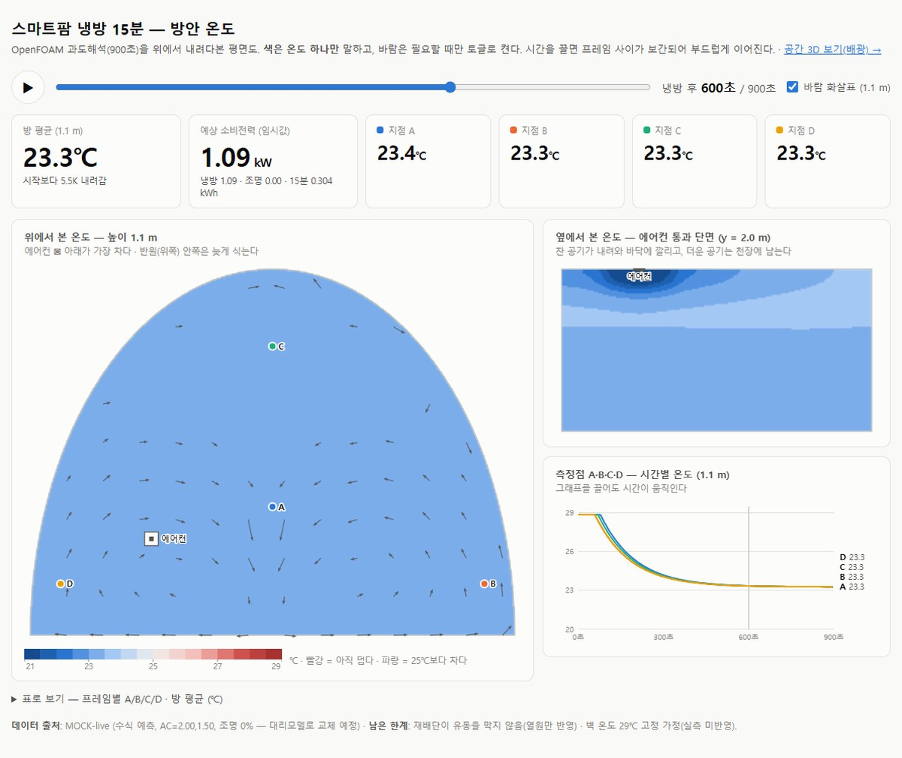
MOCK-live (수식 예측, AC=2.00,1.50, 조명 0% — 대리모델로 교체 예정)이 표시된다.임시값은 결과 화면에서도 구분된다. 웹 대시보드는 프레임 목록의 출처 문자열을 그대로 하단에 표시하고, 전력 타일에는 가정값임을 명시한다. 언리얼의 3D 전력 텍스트도 같은 전력 결과를 읽는다.
실데이터가 들어오면 출처 문자열이 simulated 또는 실측 표기로 바뀌며, 화면 구성은 그대로 유지된다.
3.8목데이터의 신뢰 수준 — 실계산과의 대조
임시 모델이 실제 CFD와 얼마나 어긋나는지를 vane25 결과와 직접 비교하였다. 임시 모델은 냉각 개시가 약 1분 늦고, 900초 평형온도가 실계산보다 1.1~1.5 K 높게 형성된다. 반면 측정점 간 차이가 작아 실제 해석의 공간 편차(특히 1.7 m 높이의 C 지점)를 재현하지 못한다. 따라서 현재 임시 예측기는 화면과 파이프라인을 움직이기 위한 구조용 데이터이며, 정량 판단에는 쓰지 않는다.
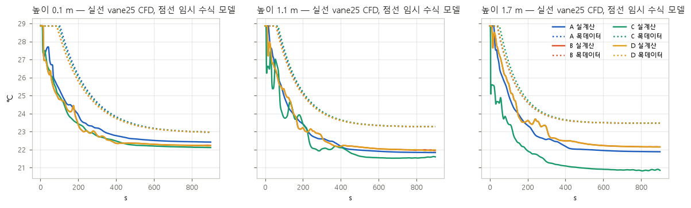
| 가짜 실측 | 보정 전 RMS | 보정 후 RMS | 역산 결과 | 판정 |
|---|---|---|---|---|
| vane25 CFD 프로브 | 1.71 ℃ | 0.55 ℃ | dT_end −1.25 K · s_tau 0.93 · s_delay 0.05 | 주의 파라미터 보정 후에도 잔차가 남음 |
| 수직취출 CFD 프로브 | 1.85 ℃ | 1.55 ℃ | dT_end −0.42 K · s_tau 1.01 · s_delay 0.05 | 불일치 모델 가정(측면취출) 자체가 다름 |
판정 기준: 보정 후 RMS 0.5 ℃ 이하 적합, 1.0 ℃ 이하 주의, 초과 시 불일치. 수직취출 케이스에서 불일치가 검출된 것은, 취출 방식이 다른 데이터를 검사기가 올바르게 거부함을 보여준다.
3.9교체 절차
| 도착하는 것 | 교체 작업 | 바뀌지 않는 것 |
|---|---|---|
| 실측 온도 CSV | t_s,point,ue_x,ue_y,z,T_C 형식으로 저장하고 검사기와 PINN의 입력으로 넣는다. | 검사 판정·그래프·웹 표시 |
| 조명 IES · 스펙시트 | IES를 언리얼 RectLight와 웹 3D 뷰에 장착하고, 소비전력을 조명 전력 상수에 넣는다. | 재배단·조명 배치, 광열 결합 구조 |
| 전력 실측 | COP, 팬 전력 상수를 실측값으로 바꾼다. | 전력 타일·3D 텍스트 |
| 보정 CFD 케이스 | 같은 반출 과정으로 3차원 프레임·단면·커튼을 만들고, 이를 모아 대리모델 교재를 교체한 뒤 재학습한다. | 데이터 계약, 언리얼 레벨 |
| 학습된 대리모델 | 라이브 예측기 자리를 대리모델 추론 모듈로 교체한다. 출력 파일 형식은 그대로다. | [SF 갱신] 버튼, 시퀀스, 화면 |
4실제 CFD 결과와 언리얼 시각화
4.1두 해석 케이스
1차 해석은 취출 방향을 수직 아래로 두었으나, 실물 4Way 카세트는 베인을 통해 천장면을 따라 바깥으로 취출한다. 이를 반영하여 베인 25° 측면취출(vane25)로 재계산하였다. vane25에서는 찬 제트가 천장을 타고 약 2.5 m 나아가다 부력에 의해 방 중간에서 가라앉는 현상(cold dump)이 확인되었고, 혼합이 좋아져 냉각이 빨라졌다. 현재 언리얼 시각화의 기준 데이터는 vane25다.
| 1.1 m 네 지점 평균 | 60초 | 320초 | 900초 | 에어컨 직하부 A (60초) | 기류 구조 |
|---|---|---|---|---|---|
| 수직취출 (1차) | 25.98 ℃ | 23.55 ℃ | 22.52 ℃ | 22.61 ℃, 강한 하강 제트 | 가운데 한 줄기 하강 |
| vane25 (실물 반영) | 26.40 ℃ | 22.38 ℃ | 21.84 ℃ | 26.24 ℃, 리턴 흡입 상승 | 4방향 천장 제트 → cold dump |
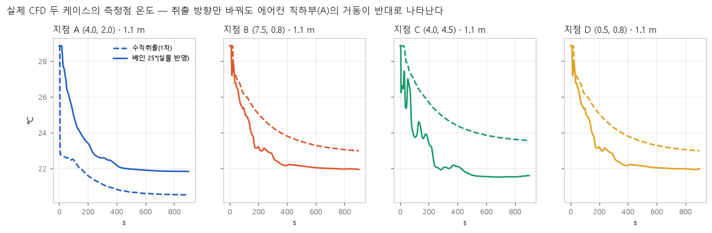
4.2언리얼 — 시간에 따른 기류·온도 변화
언리얼 레벨은 D자 바닥, 방 윤곽, 에어컨 카세트(판넬·취출 슬롯 4·리턴), A~D 위치 마커로 구성된다. 기류는 4방향 취출 커튼으로 표현하며, 커튼의 색은 그 지점의 온도다. 아래는 vane25 실데이터를 프레임별로 레벨에 올려 SceneCapture로 촬영한 결과다. 냉방이 진행되며 커튼 끝자락이 청록에서 남색으로 바뀌어, 방 전체가 식어 제트가 덜 데워지는 과정이 드러난다.
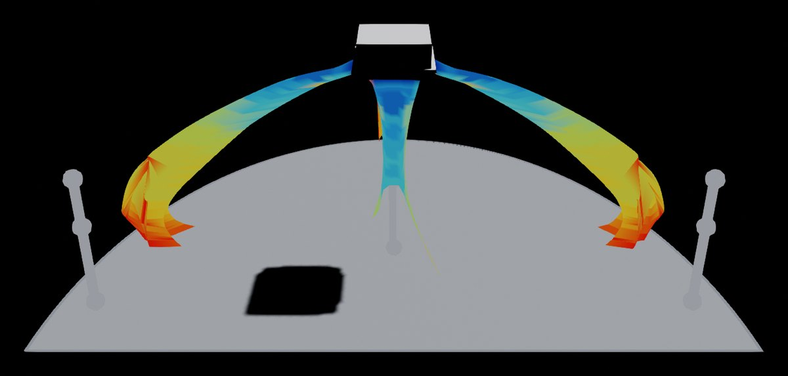
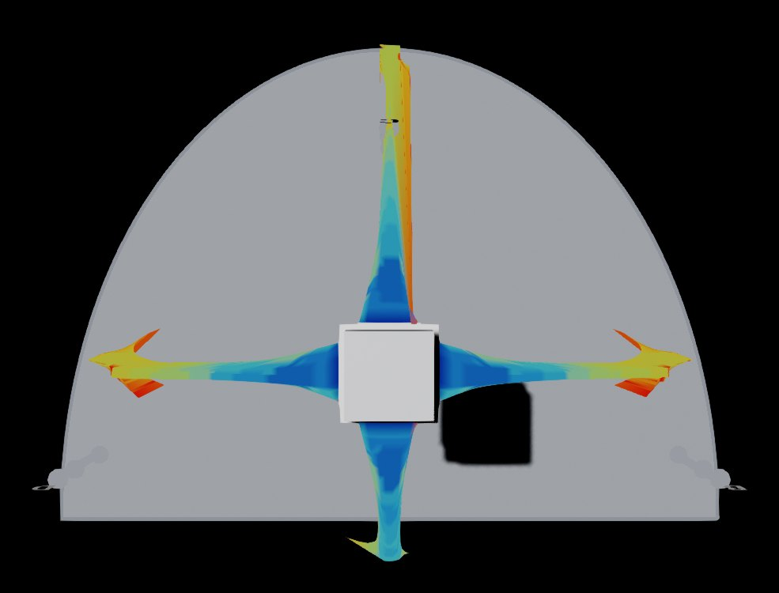
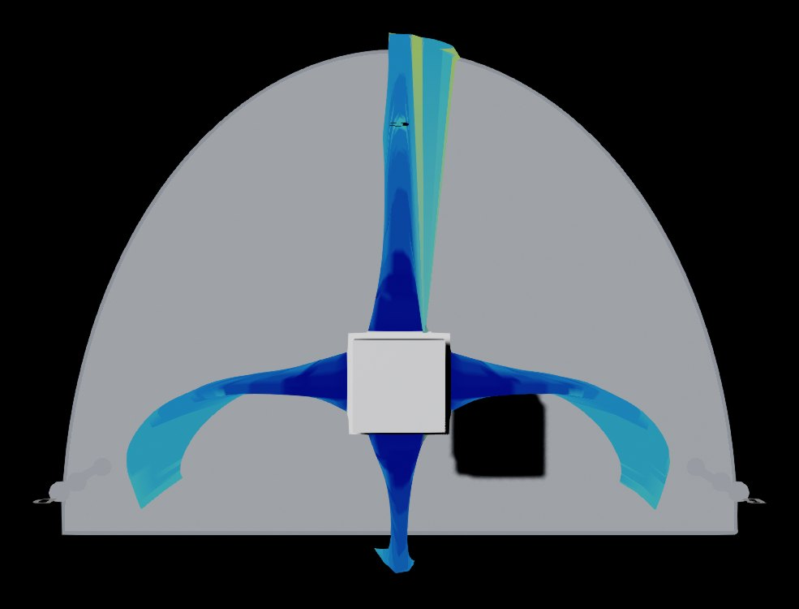
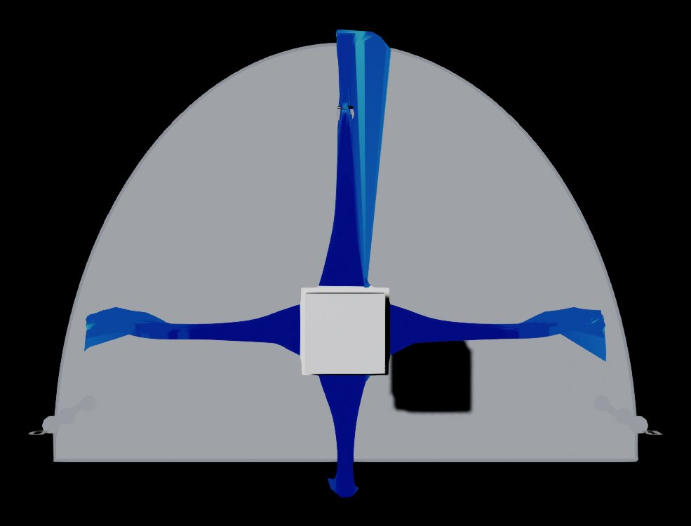
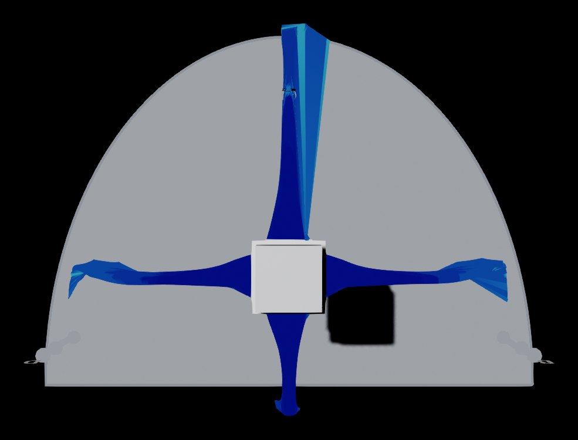
그림 4-2. 언리얼 캡처, vane25 커튼 15프레임 중 5장. 윗줄은 평벽 쪽에서 방 안쪽을 본 시점, 아랫줄은 위에서 본 시점이다. 아랫줄은 평면도와 방향을 맞추기 위해 상하 반전하였다(언리얼은 왼손 좌표계). 색 척도 20.4~28.9 ℃ 고정. 재배단은 CFD 격자에 포함되지 않았으므로 해석 화면에서는 숨긴다.
재생 방식
15프레임은 시퀀서에 올라가 재생 1초 = 실제 30초(30배속, 32초 루프) 또는 10초(10배속, 90초)로 재생되며, 프레임 사이는 색 번짐과 커튼 모핑으로 보간된다. 툴바의 [SF 30배속]·[SF 10배속]·[SF 정지] 버튼으로 전환한다. 재생 중 프레임별 예상 소비전력이 3D 텍스트로 표시된다.
4.3온도 단면과 바람 — 1차 해석 필드
단면과 바람 화살표는 CFD 셀 전체가 필요하며, 이 문서 작성 환경에는 1차 수직취출 케이스의 전체 필드가 보관되어 있다. 아래 그림은 그 필드로 만든 것으로, 파생 방식과 형식은 vane25에도 동일하게 적용된다.
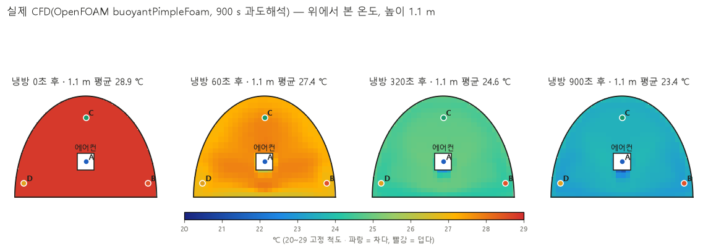
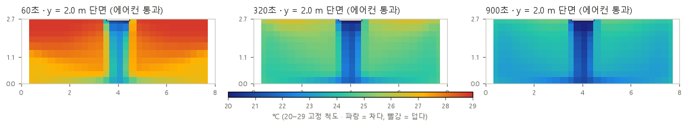
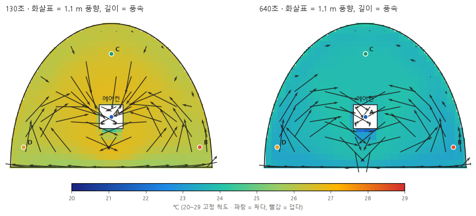
4.4웹 미리보기
언리얼 3D 화면은 단면·커튼·화살표가 한 원근에 겹쳐 서로를 가리므로, 같은 데이터를 2D로 분리해 보는 웹 대시보드와 공간·조명 배치를 확인하는 3D 배광 미리보기를 함께 제공한다. 두 페이지는 데이터가 내장된 단일 HTML 파일이다.
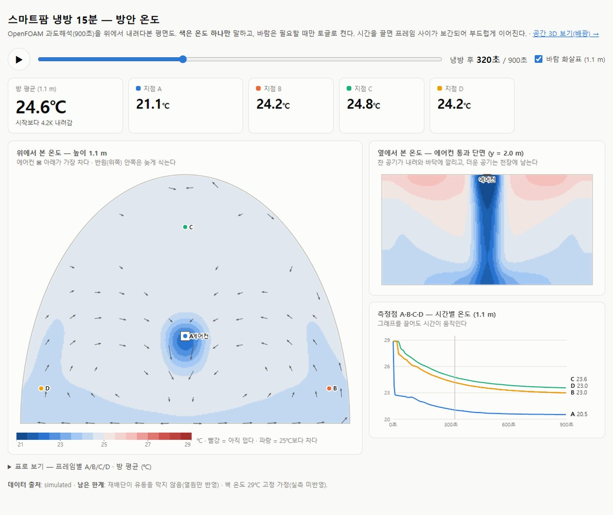
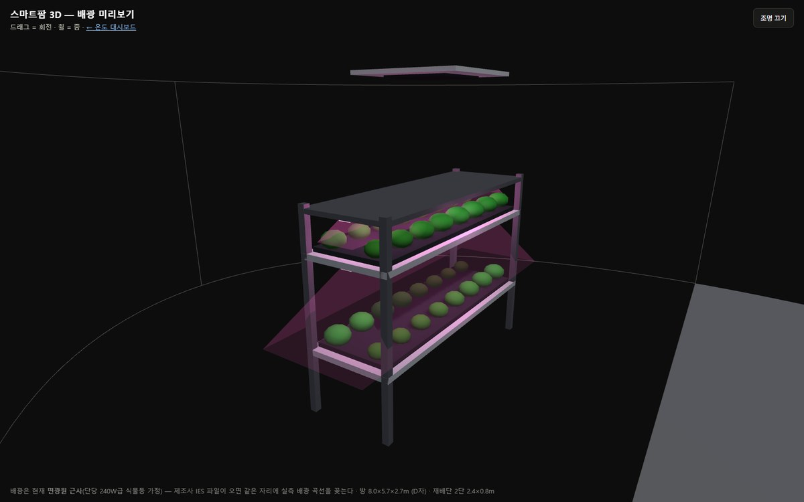
웹 대시보드의 vane25 판은 수평·수직 단면 파생 데이터가 필요하며, 본 작성 환경에는 vane25 전체 필드가 없어 1차 해석 필드로 캡처하였다. vane25 전체 필드가 확보되면 같은 화면이 vane25로 생성된다.
5라이브 트윈 — 위치 변경에 따른 예측 갱신
라이브 트윈은 언리얼에서 에어컨이나 재배단을 끌어 옮기고 버튼을 누르면, 새 배치에서의 예상 온도·기류·전력으로 화면이 다시 재생되는 기능이다. 위치 변경은 두 경로로 처리된다. 즉시 응답 경로는 예측기로 수 초 안에 화면을 갱신하고, CFD 경로는 같은 위치로 새 경계조건을 만들어 정식 해석을 다시 수행한다.
5.1언리얼에서의 위치 변경 결과
에어컨 루트 액터를 세 위치에 두고 [SF 갱신]과 같은 순서(조건 기록 → 예측 → 단면·커튼 재구성)로 레벨을 갱신한 뒤 촬영하였다. 취출 커튼과 1.1 m 온도 카펫의 냉기 중심이 새 에어컨 위치로 이동하고, 에어컨 통과 수직 단면도 해당 y 위치로 옮겨 생성된다. 화면 전체는 냉방 130초 시점이다.
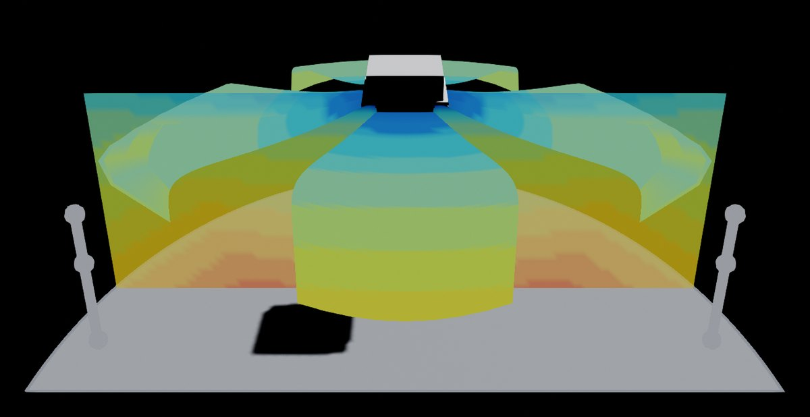
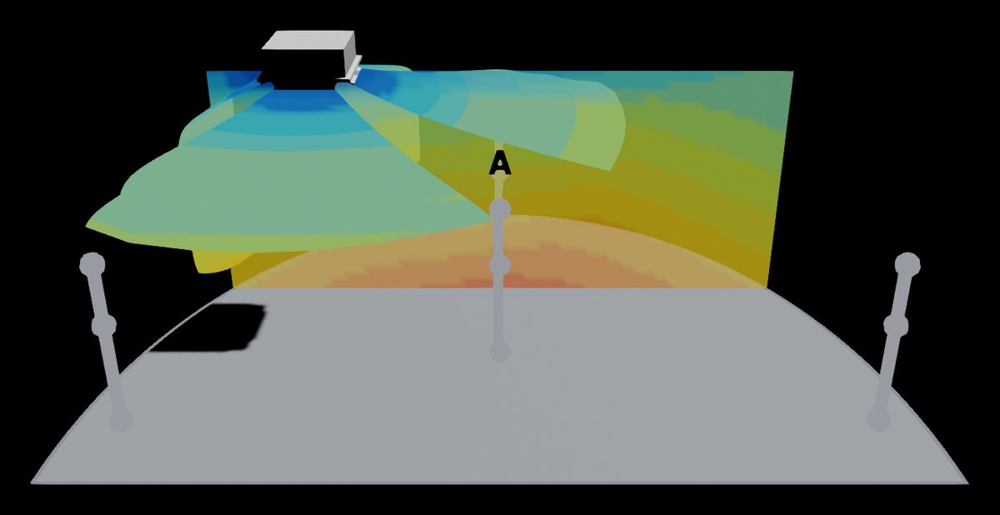
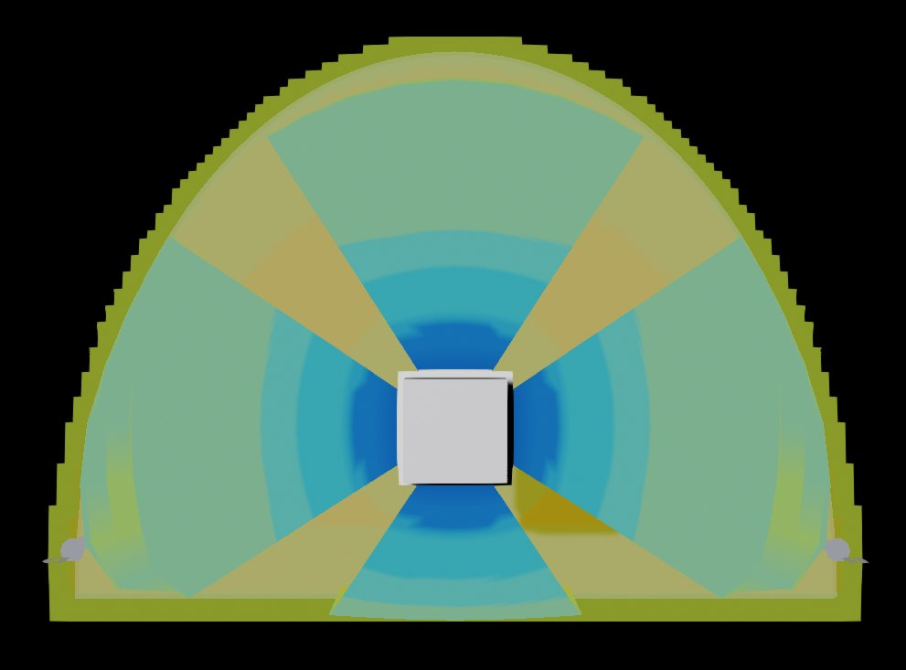
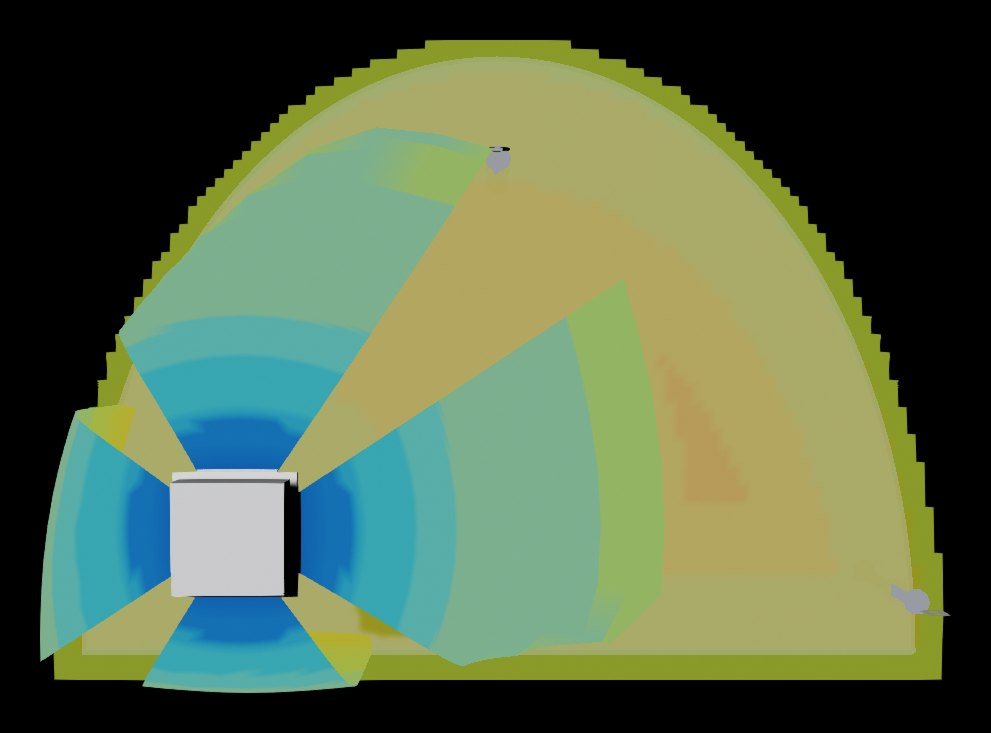
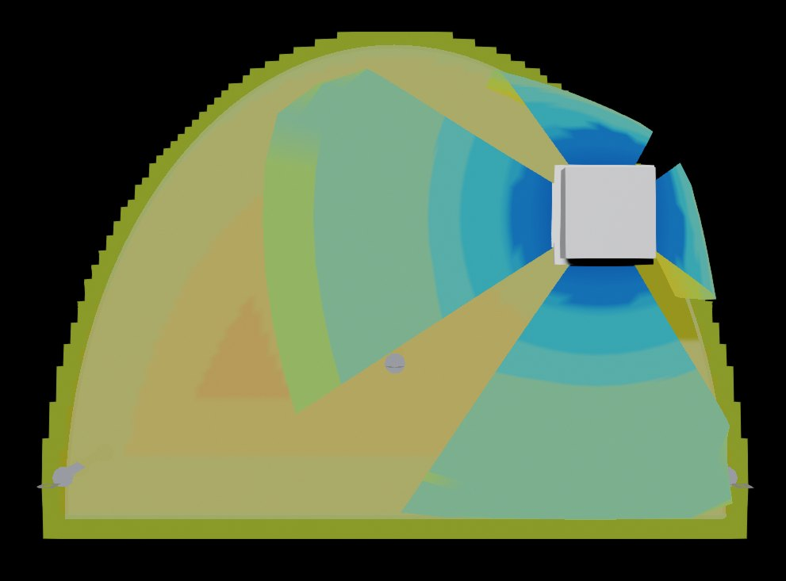
그림 5-2. 언리얼 라이브 트윈 캡처. 윗줄은 커튼과 에어컨 통과 수직 단면, 아랫줄은 위에서 본 1.1 m 온도 카펫과 커튼(상하 반전)이다. 원근 시점은 평벽 바깥에서 방 안쪽을 보므로 x가 화면 왼쪽으로 증가한다.
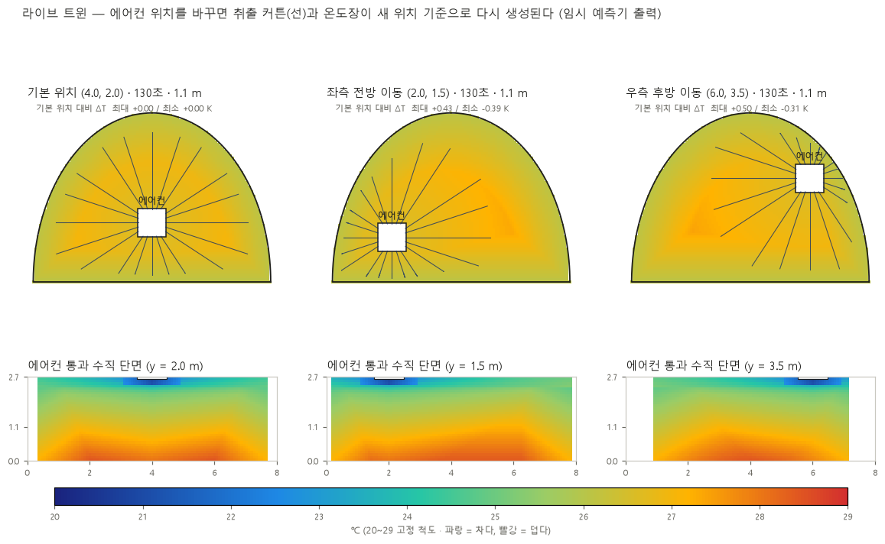
5.2조명 점등과 재배단 이동
재배단을 옮기면 조명 발열의 중심과 상승 플룸이 재배단을 따라가며, 조명 점등률은 방 전체 평형온도와 전력에 함께 반영된다. 재배단을 (4.0, 2.0)에서 (2.5, 3.5)로 옮긴 뒤 1.1 m 최고온도점이 새 재배단 위치에 형성됨을 확인하였다.
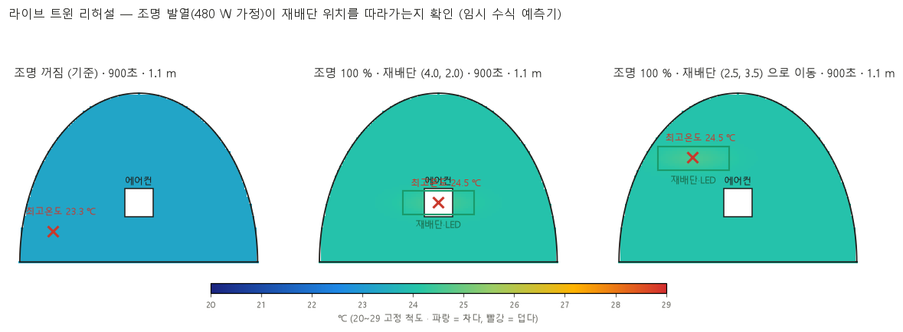
| 조건 (임시 예측기) | 15분 예상 전력 | 900초 냉방 전력 | 조명 |
|---|---|---|---|
| 에어컨 (4.0, 2.0) · 조명 꺼짐 | 0.302 kWh | 1,087 W | 0 W |
| 에어컨 (2.0, 1.5) · 조명 꺼짐 | 0.304 kWh | 1,087 W | 0 W |
| 에어컨 (6.0, 3.5) · 조명 꺼짐 | 0.305 kWh | 1,087 W | 0 W |
| 조명 100 % · 재배단 (4.0, 2.0) | 0.494 kWh | 1,432 W | 480 W |
| 조명 100 % · 재배단 (2.5, 3.5) | 0.444 kWh | 1,192 W | 480 W |
해석상 유의점
임시 예측기에서 에어컨 위치에 따른 1.1 m 온도 차이는 130초에 최대 ±0.5 K이고 900초에는 거의 사라진다. 전력 차이도 0.003 kWh 수준이다. 이는 수식 모델이 방 전체 냉각을 위치와 무관한 시정수로 다루기 때문이며, 실제 배치 효과를 나타내지 않는다. 배치에 따른 정량 차이는 CFD 경로로 계산한 케이스와 이를 학습한 대리모델이 들어온 뒤에 평가한다. 현재 결과가 보여주는 것은 위치 변경이 입력 조건 → 예측 → 화면까지 끊김 없이 전달되는 구조다.
6검사·역산(PINN)과 대리모델 구조
6.1검사 자리 — 실측과 예측의 어긋남 판정
실측이 도착하면 먼저 예측이 실측과 맞는지를 판정하고, 맞지 않으면 어떤 입력값이 틀렸는지를 역산한다. 현재 역산기는 임시 모델의 세 인자(평형온도 오프셋, 시정수 배율, 도달지연 배율)를 격자 최소제곱으로 맞추며, 결과는 3.8절의 표와 같다.
6.2PINN 리허설 — 센서 12점으로 온도장 복원
vane25 결과의 센서 12점(A~D × 3높이) 시계열만을 입력으로, 단순화 열수지 방정식 ut = aΔu + k(ueq − u)를 물리 제약으로 둔 PINN(DeepXDE, 15,000회 반복)이 방 전체 온도장을 복원하도록 하였다. PINN이 보지 않은 단면 전체를 정답지로 채점한 결과, 수평 단면에서 RMS 0.62 ℃로 기존 수식 모델(1.57 ℃)보다 크게 개선되었다. 이는 온도센서 자체 오차(±0.5 ℃)와 비슷한 수준이다. 방식은 Wei & Ooka(2023)의 희소 센서 기반 실내 장 복원을 따랐다.
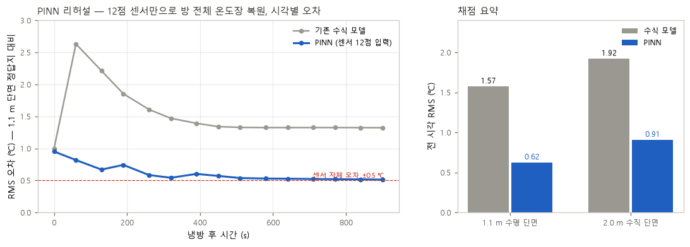
| 역산된 값 | 결과 | 해석 |
|---|---|---|
| 냉각 시정수 | 304 s | 방이 식는 속도 |
| 유효확산계수 | 0.091 m²/s | 분자확산의 수천 배로, 난류 혼합 규모에 해당함 |
| 평형온도 | 16.4 ℃ | 900초 안에 평형에 도달하지 않아 급기온도로 수렴함. 냉각률과 온도차의 곱만 구속되므로 개별 해석에 유의함 |
한계: 이류(바람)를 생략한 단순 방정식이며, 정답지 채점은 가짜 실측이기에 가능하였다. 실측 단계에서는 이 채점 결과가 PINN 채택의 근거로 남는다.
6.3대리모델 구조 리허설
정확도가 아니라 구조를 확인하는 단계다. 교재(npz) → 학습 → 가중치 저장 → 추론의 흐름을 갖추었고, 진짜 CFD 케이스가 쌓이면 교재만 바꾸어 재학습한다. 아키텍처는 그때 물리 손실을 포함한 정식 PINO로 승격한다.
| 항목 | 현재 |
|---|---|
| 입력 조건 | [ac_x, ac_y, t]. 이후 베인각, 풍량, 조명 점등률로 확장 |
| 출력 | 1.1 m 수평 온도장 72 × 101, 수직 단면 34 × 101 |
| 교재 | 임시 모델 750쌍 (에어컨 위치 50곳 × 15시각, 가장자리 0.8 m 제외 균일 추출) |
| 모델 · 학습 | 조건 → 필드 디코더(MLP + Conv), AdamW 학습률 2×10⁻³, 300에폭, 위치 10 %를 검증용으로 분리 |
| 산출물 | 학습된 가중치. 추론 시 불러와 조건 → 온도장을 계산한다 |
7냉방·조명 전력량 계산
냉방기 전력 실측이 없는 상태에서, CFD 또는 예측기가 내놓는 리턴 공기온도로 냉방기의 열제거율을 구하고 가정 COP로 나누어 소비전력과 15분 전력량을 산출한다. 조명 전력은 점등률에 가정 와트를 곱해 더한다. 결과는 전력 결과로 저장되어 웹 대시보드와 언리얼 재생 화면에 표시된다.
7.1계산식
에어컨이 방에서 빼내는 열은 흡입(리턴) 공기와 취출(급기) 공기의 온도차에 공기 질량유량과 비열을 곱한 값이다. 압축기 전력은 이 열을 COP로 나눈 값이고, 실내기 팬 전력은 별도로 더한다. 전력량은 시계열 전력을 사다리꼴로 적분한다.
ṁ·cp = (25 CMM ÷ 60) × 1.17 kg/m³ × 1006 J/(kg·K) = 490.4 W/K
Q(t) = max( ṁ·cp × (T_return(t) − 16.35 ℃), 0 ) [W] 열제거율
P_cool(t) = Q(t) ÷ COP + P_fan [W] 냉방 소비전력 (팬 포함)
P_light = pct ÷ 100 × 480 [W] 조명 소비전력
E_15min = Σ ( P_cool,i + P_cool,i+1 ) ÷ 2 × ( t_i+1 − t_i ) ÷ 3600
+ P_light × 0.25 [Wh] 15분 전력량
부하율 = 평균 Q ÷ 9000 W 정격 냉방능력 대비
7.2입력 상수와 근거
| 상수 | 값 | 근거 | 상태 |
|---|---|---|---|
| 풍량 | 25 CMM | 카세트 강풍 사양. CFD 취출 경계조건과 같은 값 | 확정 |
| 급기 온도 | 16.35 ℃ | CFD 경계조건 289.5 K. 실물 급기 온도는 미측정 | 임시값 |
| 공기 밀도·비열 | 1.17 · 1006 | 약 25 ℃ 공기 물성 (kg/m³ · J/kg·K) | 확정 |
| 리턴 온도 | A 1.7 m | 리턴 그릴 센서가 없어 에어컨 직하부 1.7 m 프로브로 대신함 | 근사 |
| COP | 3.5 | 명판에 소비전력 미표기. 모델 TUW090PA2SR의 효율 1등급 확인 → 1등급 카세트 통상 3.4~3.8에서 채택 | 임시값 |
| 팬 전력 | 90 W | 카세트 실내기 강풍 대략값 | 임시값 |
| 조명 전력 | 480 W | 식물등 240 W × 2단 가정. 점등률 pct를 곱함 | 임시값 |
| 정격 냉방능력 | 9,000 W | TUW090PA2SR 사양. 부하율 계산의 분모 | 확정 |
7.3계산 절차
- 측정점 시계열에서
point = A,z = 1.7인 행만 골라 시각 순으로 정렬한다. vane25는 1,017행, 수직취출은 768행이다. - 행마다 열제거율 Q와 냉방 소비전력 P를 계산한다. 온도가 급기보다 낮으면 Q는 0으로 둔다.
- 이웃한 두 행의 평균 전력에 시간 간격을 곱해 더해 15분 냉방 전력량을 구한다.
- 라이브 예측기는 이 시계열에서 프레임 시각 15개에 가장 가까운 P를 뽑아
cool_W배열로 쓰고, 조명 전력량을 더해kwh_15min을 기록한다. - 같은 계산으로 시각별 표, 15분 적산, 평균 부하율을 산출한다 (7.4절 표).
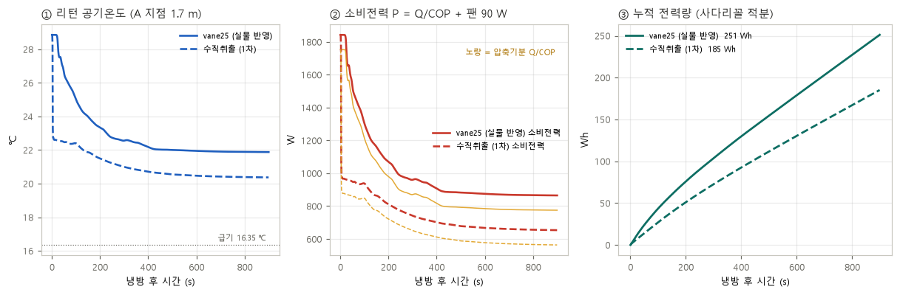
7.4실제 CFD 결과로 계산한 전력
| 시각 | vane25 (실물 반영) | 수직취출 (1차) | ||||
|---|---|---|---|---|---|---|
| 리턴 ℃ | Q (W) | P (W) | 리턴 ℃ | Q (W) | P (W) | |
| 시작 (약 0.5초) | 28.86 | 6,136 | 1,843 | 28.86 | 6,136 | 1,843 |
| 60초 | 26.21 | 4,834 | 1,471 | 22.48 | 3,005 | 949 |
| 130초 | 24.26 | 3,877 | 1,198 | 22.01 | 2,774 | 883 |
| 320초 | 22.57 | 3,050 | 962 | 20.93 | 2,244 | 731 |
| 640초 | 21.93 | 2,737 | 872 | 20.45 | 2,011 | 664 |
| 900초 | 21.88 | 2,713 | 865 | 20.37 | 1,972 | 654 |
| 15분 전력량 | 251 Wh (0.25 kWh) | 185 Wh (0.19 kWh) | ||||
| 평균 열제거율 · 부하율 | 3,207 W · 35.6 % | 2,282 W · 25.4 % | ||||
냉방 개시 직후 소비전력 1,843 W는 사양상 정격 소비전력 2,000 W에 가까운 수준이며, 방이 식으면서 약 5분 뒤 900 W 안팎으로 수렴한다. 두 케이스의 차이는 냉방 성능 차이라기보다 리턴 온도 근사의 한계에서 온다. 수직취출에서는 찬 급기가 A 지점 1.7 m를 곧바로 지나가므로 리턴 온도가 실제보다 낮게 읽혀 전력이 작게 계산된다. vane25에서는 A 지점이 리턴 흡입 기류 안에 있어 근사가 실제 리턴에 더 가깝다.
7.5조건별 전력량
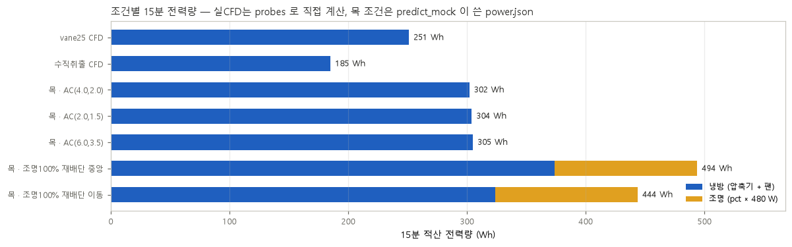
에어컨 위치만 바꾼 목 조건 세 가지는 서로 3 Wh 이내로 같다. 임시 예측기가 A 지점 온도를 위치와 거의 무관하게 계산하기 때문이다(5.2절). 조명 100 %에서 재배단을 A 지점에서 멀리 옮기면 냉방 전력량이 줄어드는데, 이는 광열 덩어리가 리턴 대용 센서에서 멀어진 효과로, 실제 부하가 줄었다는 뜻은 아니다.
7.6결과 데이터와 화면 표시
아래는 에어컨 기본 위치, 조명 60 %로 라이브 예측기를 실행해 얻은 실제 전력 결과이다. cool_W는 팬 전력이 포함된 냉방 소비전력이다.
{
"t": [0.0, 60.0, 130.0, 190.0, 260.0, 320.0, 390.0, 450.0, 510.0, 580.0, 640.0, 710.0, 770.0, 840.0, 900.0],
"cool_W": [1841.5, 1746.1, 1523.3, 1422.7, 1359.4, 1330.6, 1312.7, 1304.6, 1299.9, 1297.1, 1295.7, 1295.0, 1294.6, 1294.3, 1294.3],
"light_W": 288.0,
"fan_W": 90.0,
"note": "임시값: COP 3.5(1등급 추정)·조명 480W 가정 — 실측으로 교체",
"kwh_15min": 0.417
}
| 표시 위치 | 동작 |
|---|---|
| 웹 대시보드 | 시간 슬라이더 위치에서 cool_W를 앞뒤 프레임 사이로 선형 보간하고, “예상 소비전력 (임시값)” 타일에 합계 kW와 “냉방 · 조명 · 15분 kWh”를 표시한다 (그림 3-1). |
| 언리얼 재생 | 시퀀스를 만들 때 프레임마다 3D 텍스트를 평벽 위(400, −40, 300 cm)에 만들고 t=…s AC … kW LED … kW TOTAL … kW를 쓴다. 시퀀서 가시성 트랙이 재생 시각에 맞는 텍스트만 켜므로, 재생 중 전력 값이 온도 변화와 함께 바뀐다. |
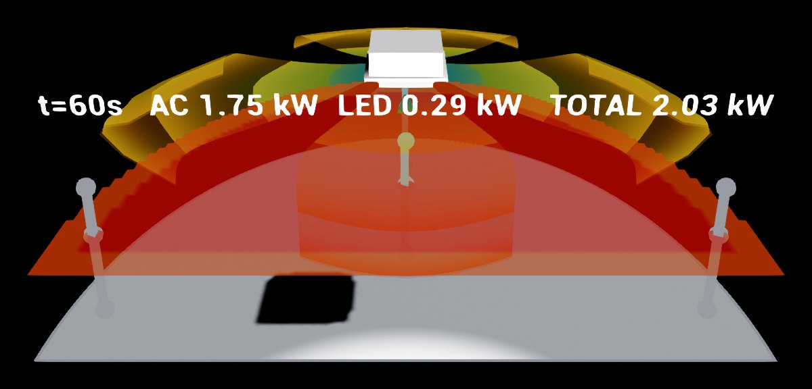
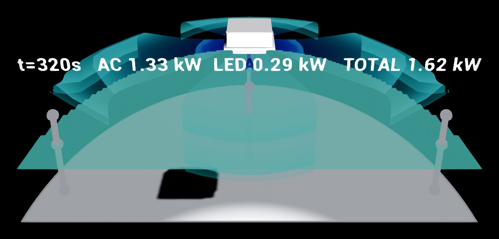
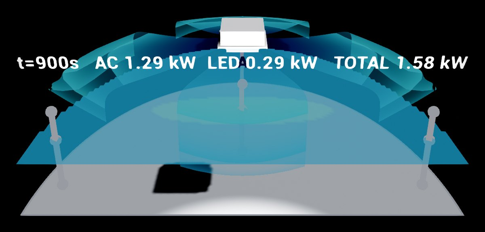
그림 7-3. 언리얼 시퀀스의 프레임별 전력 텍스트 캡처 (에어컨 기본 위치, 조명 60 %). 표시 값은 위 전력 결과와 일치한다.
7.7한계와 교체 지점
| 한계 | 내용 | 교체 · 보완 |
|---|---|---|
| COP 값 불일치 | CFD 경계조건 데이터의 사양 항목에는 정격 냉방 9,000 W · 소비 2,000 W(비 4.5)가 기록되어 있으나, 전력 근사는 1등급 통상값 3.5를 쓴다. | 전력계·클램프미터 실측으로 COP 확정 |
| 리턴 온도 대용 | A 지점 1.7 m 프로브는 취출 방식에 따라 급기 기류에 들어가 리턴 온도를 낮게 읽는다 (7.4절). | 리턴 그릴 온도 센서 추가 |
| 부분부하 효율 | 인버터 부분부하 구간에서 COP가 달라지는 효과가 없다. 사양의 소비전력 곡선(정격 2,000 · 중간 1,450 · 최소 700 W)은 아직 쓰지 않는다. | 사양 곡선 또는 R4 EnergyPlus 설비 모델 |
| 조명 발열의 부하 반영 | 조명 발열은 온도장을 통해서만 냉방 전력에 간접 반영된다. | 광열을 포함한 CFD 케이스, 전력 실측 |
| 팬·조명 상수 | 팬 90 W, 조명 480 W 모두 가정값이다. | 장비 스펙시트 · 전력 실측 |
8장비·배광 파일 도착 후 작업
스마트팜 장비와 조명 배광 파일이 확보되면 다음 순서로 임시값을 실측 기반 값으로 바꾼다. 각 단계는 앞 단계 결과를 입력으로 받는다.
| 순서 | 작업 | 내용 | 완료 판정 |
|---|---|---|---|
| 1 | 장비 사양 확정 | 재배단 실측 치수를 재배단 배치 치수에, 조명 소비전력·PPF를 조명 전력 상수에 반영한다. | 화면 재배단과 실물 치수 일치 |
| 2 | 배광 장착 | IES(LM-63)를 언리얼 RectLight의 IES Texture 슬롯과 웹 3D 뷰에 넣는다. IES를 제공하지 않는 조명은 선정에서 제외한다. | 선반 위 PPFD 실측과 배광 모양 대조 |
| 3 | 센서 설치·로깅 | A~D × 0.1·1.1·1.7 m 온도, 선반 위 PPFD, 전력계를 설치하고 측정점 시계열 형식으로 기록한다. 설치 전 기준기 대조를 남긴다. | CSV가 형식 검사를 통과 |
| 4 | 검사·역산 | 실측 데이터로 검사기와 PINN 리허설을 실행하여 판정하고, 벽 열손실·풍량 등 입력값을 역산한다. | 보정 후 RMS 0.5 ℃ 이하 |
| 5 | 보정 CFD | 역산값과 재배단을 포함한 격자로 CFD를 다시 계산하고, 운전조건(위치·풍량·베인각·조명)을 바꾸어 케이스를 누적한다. | 반출물이 데이터 계약을 만족 |
| 6 | 대리모델 교체 | 누적 케이스로 교재를 만들어 PINO를 학습하고, 라이브 예측기 자리를 추론 모듈로 교체한다. | [SF 갱신] 결과가 검증 케이스 CFD와 일치 |
| 7 | 전력 확정 | 전력 실측으로 COP·팬 전력을 교정한다. | 전력 타일 값과 전력계 대조 |
8.1제조사 요청 사항 (조명)
- IES 배광 파일 (ANSI/IES LM-63)
- 스펙시트: 소비전력, PPF
- 분광 분포 (가능한 경우). lux와 PPFD의 환산계수가 광원 스펙트럼에 따라 달라지기 때문이다.
9남은 한계
| 한계 | 영향 | 해소 방법 |
|---|---|---|
| 재배단 미반영 CFD | 현재 CFD는 빈 방 해석이다. 화면에 재배단을 그리면 커튼이 선반을 통과하는 오해가 생기므로 해석 화면에서는 숨긴다. | 재배단 포함 격자 재계산 |
| 벽 온도 29 ℃ 고정 | 벽 열유입이 방 평균에 반응하지 않아, 냉각 시정수가 완전혼합 가정과 다르게 나타난다. | 적외선 온도계로 벽면 실측 |
| 임시 예측기의 위치 민감도 | 배치 효과를 정량 판단할 수 없다(5.2절). | CFD 케이스 누적 후 대리모델 교체 |
| vane25 전체 필드 부재 | 이 작성 환경에서는 vane25 단면·화살표를 다시 만들 수 없어 4.3·4.4절은 1차 해석 필드로 작성하였다. | vane25 프레임 CSV 보관 위치 확인 후 재생성 |
| 습도 미포함 | CFD 기본 출력에 습도장이 없다. | 수증기 수송 스칼라와 증산 소스 추가 |
| 파이썬 나이아가라 저작 불가 | 엔진 파티클 연출은 에디터에서 한 번 수동 저작이 필요하다. 현재는 절차 생성 메시(커튼·단면)로 대체하였다. | 필요 시 에디터 저작 1회 |